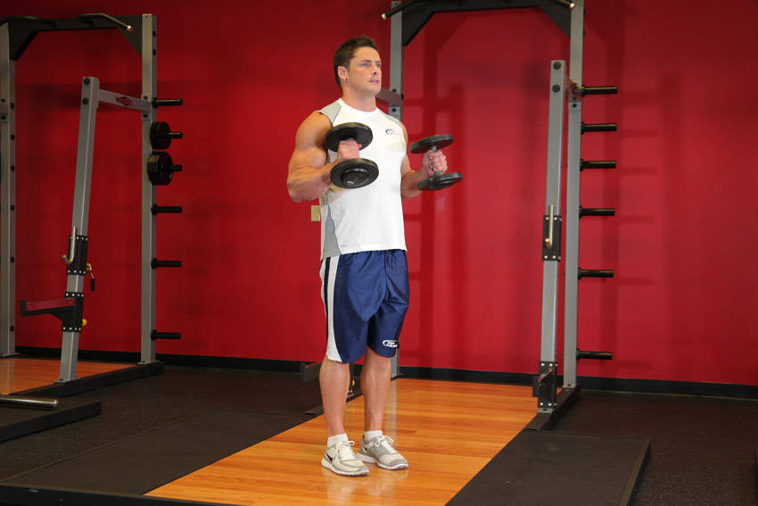

- Stand up with your torso upright and a dumbbell on each hand being held at arms length. The elbows should be close to the torso.
- The palms of the hands should be facing your torso. This will be your starting position.
- Now, while holding your upper arm stationary, exhale and curl the weight forward while contracting the biceps. Continue to raise the weight until the biceps are fully contracted and the dumbbell is at shoulder level. Hold the contracted position for a brief moment as you squeeze the biceps. Tip: Focus on keeping the elbow stationary and only moving your forearm.
- After the brief pause, inhale and slowly begin the lower the dumbbells back down to the starting position.
- Repeat for the recommended amount of repetitions.